CSI Presentation 2025


 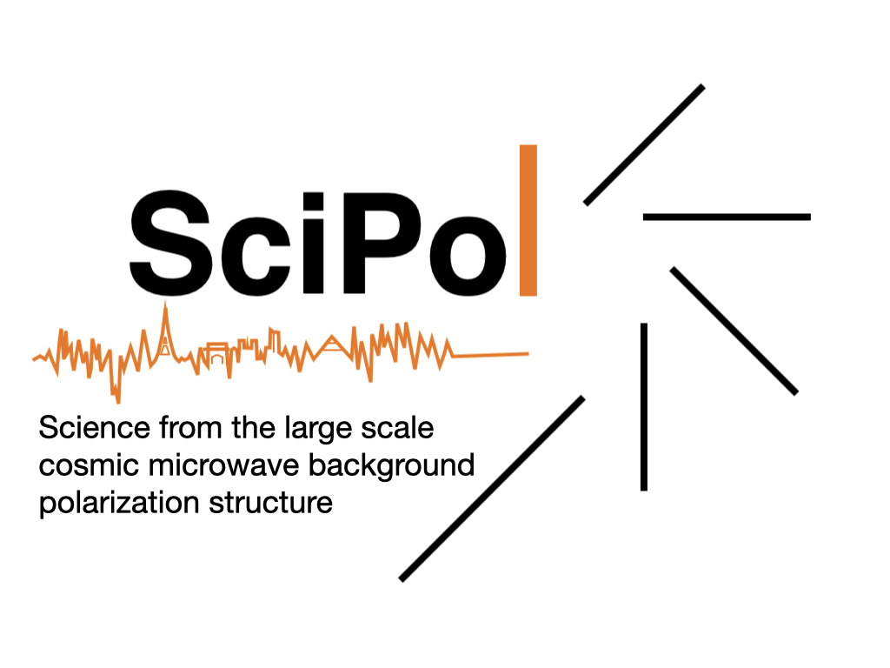
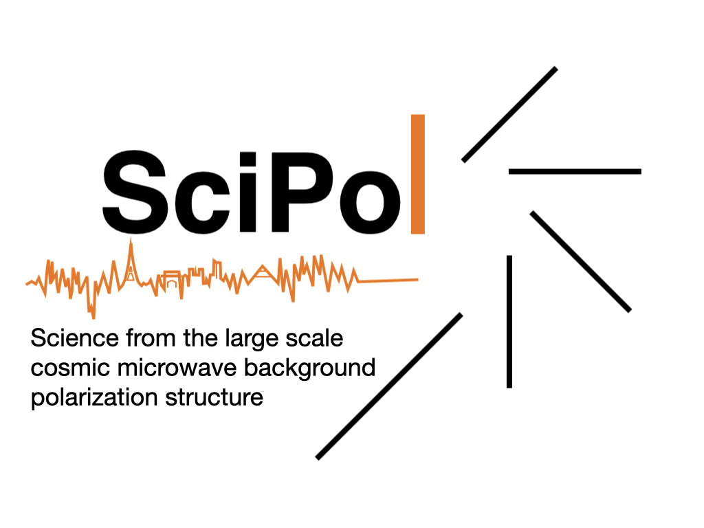
Summary of projects

Cosmic Microwave Background - Scipol

Cosmic Microwave Background


- The Cosmic Microwave Background (CMB) is the afterglow of the Big Bang, providing a snapshot of the early universe.
- The CMB is polarized, consisting of E and B modes.
- E modes are curl-free, generated by density fluctuations.
- B modes could be evidence of primordial gravitational waves, indicating cosmic inflation.
- The tensor-to-scalar ratio \(r\), which is the ratio of the tensor power spectrum to the scalar power spectrum, is a key parameter for constraining inflationary models.
Cosmic Microwave Background


- The Cosmic Microwave Background (CMB) signal is obscured by various foregrounds, making it challenging to detect the true cosmological information.
- Dust: Emission from galactic dust adds significant noise to the CMB, particularly affecting polarization measurements.
- Synchrotron Radiation: Electrons spiraling in the galaxy’s magnetic fields produce synchrotron radiation, another major contaminant.
Component seperation methods
- Blind Methods: Like SMICA (Spectral Matching Independent Component Analysis)
- Parametric Methods: Like FGbuster (Foreground Buster)
CMB Component Separation
Modified Blackbody SED of Dust:
\[ \boxed{s_{\mathrm{d}}(\nu) = A_{\mathrm{d}} \cdot \frac{\exp\left(\frac{h\nu_{0}}{k \color{red}{T_{\mathrm{d}}}}\right) - 1}{\exp\left(\frac{h\nu}{k \color{red}{T_{\mathrm{d}}}}\right) - 1} \cdot \left(\frac{\nu}{\nu_{0}}\right)^{\color{blue}{\beta}+1}} \]
Power Law of Synchrotron Emission:
\[ \boxed{s_{\text{synch}}(\nu) = \left(\frac{\nu}{\nu_0}\right)^{\color{green}{\beta_{\text{pl}}}}} \]
Signal Representation
\[ \boxed{\mathbf{d} = \mathbf{A} \mathbf{s} + \mathbf{n}} \]
\[ \boxed{\mathbf{d} = \color{green}{A_{\text{synch}}} \cdot s_{\text{synch}} + \color{blue}{A_{\mathrm{d}}} \cdot s_{\mathrm{d}} + A_{\text{cmb}} \cdot s_{\text{cmb}} + \mathbf{n}} \]
Likelihood Function
\[ \boxed{ \begin{aligned} -2 \ln \mathcal{L}_{\text{data}}(\mathbf{s}, \boldsymbol{\beta}) &= \text{const} \\ &\quad + \sum_{p} \left( \mathbf{d}_p - \mathbf{A}_p \mathbf{s}_p \right)^T \mathbf{N}_p^{-1} \left( \mathbf{d}_p - \mathbf{A}_p \mathbf{s}_p \right) \end{aligned} } \]
Minimization for Component Separation
\[ \boxed{\mathscr{L}(\color{blue}{\beta_d}, \color{red}{T_d}, \color{green}{\beta_{\text{pl}}}) = \left( \mathbf{A}^T \mathbf{N}^{-1} \mathbf{d} \right)^T \left( \mathbf{A}^T \mathbf{N}^{-1} \mathbf{A} \right)^{-1} \mathbf{A}^T \mathbf{N}^{-1} \mathbf{d}} \]
The FURAX Minimization Process 

We build a modular, physical model of the sky using linear operators, then solve for the components with a direct minimization of the likelihood.
Building the Physical Model
Define each sky component as a FURAX operator:
# Define each physical component
cmb = CMBOperator(nu, ...)
dust = DustOperator(nu, temp=params["T_d"],
beta=params["beta_d"], ...)
synchrotron = SynchrotronOperator(nu,
beta=params["beta_pl"], ...)
# Combine into a single mixing matrix
A = MixingMatrixOperator(cmb=cmb, dust=dust,
synchrotron=synchrotron)Key Features: - Modular Design: Each component is independent - Physical Models: Based on emission mechanisms
- Differentiable: Full JAX integration
Solving for the Signal
The likelihood minimization is solved analytically as:
\[\mathbf{\hat{s}} = (\mathbf{A}^T \mathbf{N}^{-1} \mathbf{A})^{-1} \mathbf{A}^T \mathbf{N}^{-1} \mathbf{d}\]
In FURAX, this is implemented with linear operators for maximum efficiency and differentiability:
Advantages: - Direct Solution: No iterative fitting required - GPU Accelerated: Efficient linear algebra - Stable: Numerically robust implementation
Summary of projects
Large Scale Structure - AstroDeep

The Traditional Approach to Cosmological Inference

- cosmological parameters (Ω): matter density, dark energy, etc.
- Predict observables: CMB, galaxies, lensing
- Extract summary statistics: \(P(k)\), \(C_\ell\) , 2PCF
- Compute likelihood: \(L(\Omega \vert data)\)
- Estimate \(\hat{\Omega}\) via maximization (\(\chi^2\) fitting)
Summary Statistics Based Inference
- Traditional inference uses summary statistics to compress data.
- Power spectrum fitting: \(P(k)\), \(C_\ell\)
- It misses complex, non-linear structure in the data
Implicit inference
Simulation-Based Inference Loop
- Sample parameters \(\theta_i \sim p(\theta)\)
- Run simulator \(x_i = p(x \vert \theta_i)\)
- Compress observables \(t_i = f_\phi(x_i)\)
- Train a density estimator \(\hat{p}_\Phi(\theta \mid f_\phi(x))\)

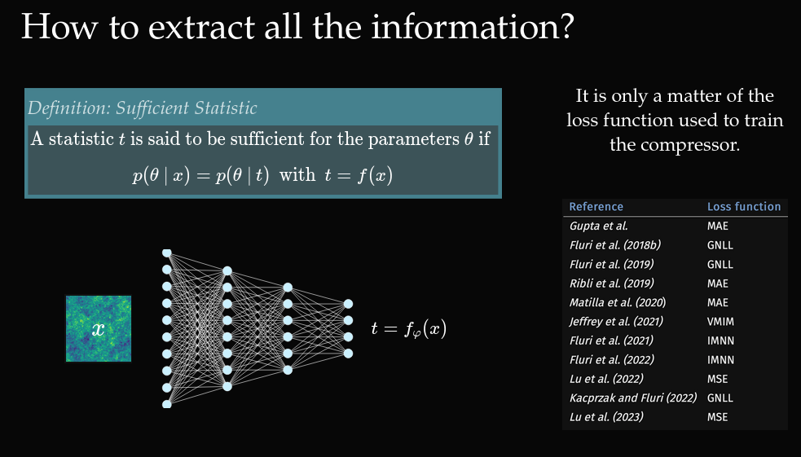
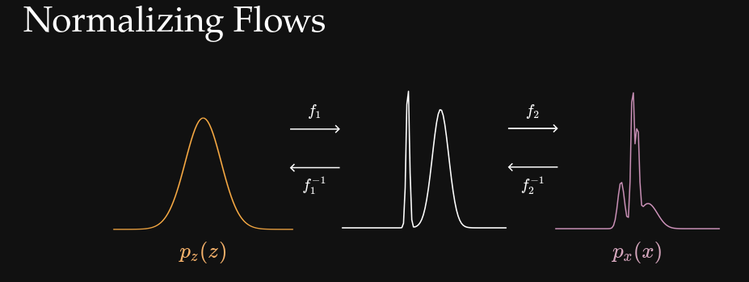
- Neural Summarisation (Zeghal & Lanzieri et al 2025).
- Normalizing Flows (Zeghal et al. 2022).
- ✅ Works with non-differentiable or stochastic simulators
- ❌ Requires an optimal compression function \(f_\phi\)
Using Full-Field Inference with Weak Lensing


From 3D Structure to Lensing Observables
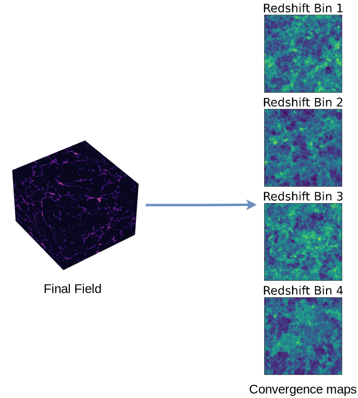
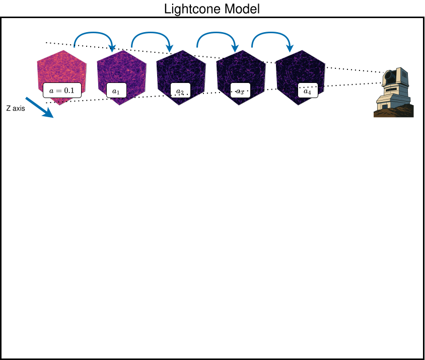


- Simulate structure formation over time, taking snapshots at key redshifts
- Stitch these snapshots into a lightcone, mimicking the observer’s view of the universe
- Combine contributions from all slabs to form convergence maps
- Use the Born approximation to simplify the lensing calculation
Born Approximation for Convergence
\[ \kappa(\boldsymbol{\theta}) = \int_0^{r_s} dr \, W(r, r_s) \, \delta(\boldsymbol{\theta}, r) \]
Where the lensing weight is:
\[ W(r, r_s) = \frac{3}{2} \, \Omega_m \, \left( \frac{H_0}{c} \right)^2 \, \frac{r}{a(r)} \left(1 - \frac{r}{r_s} \right) \]
The impact of resolution on simulation accuracy
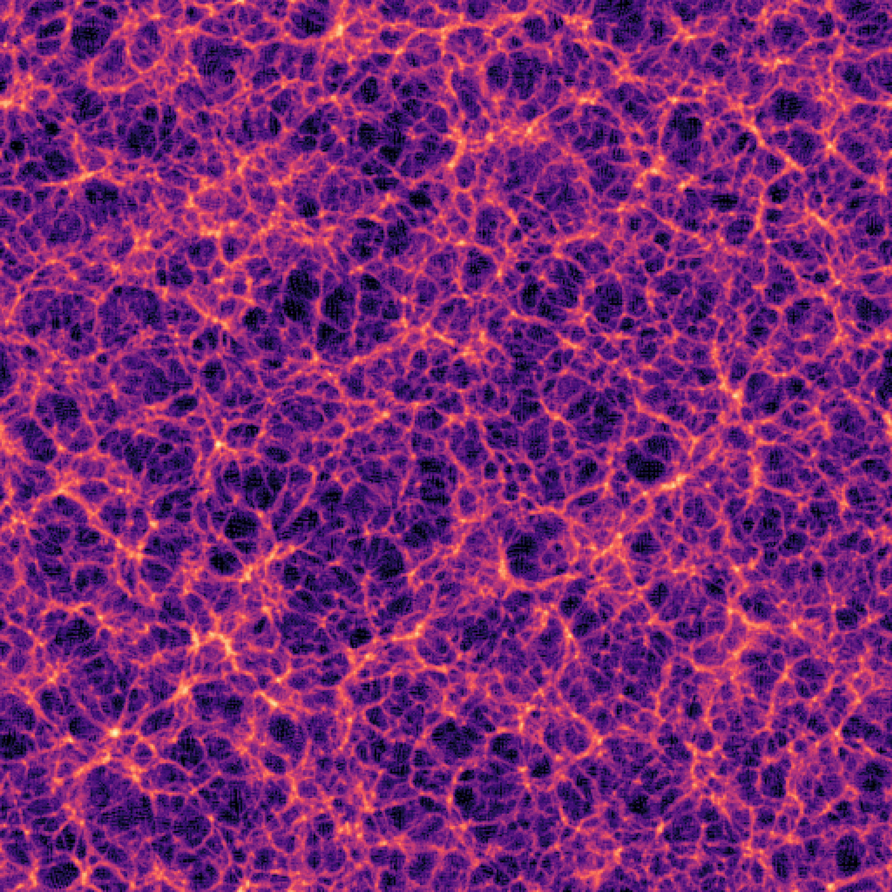
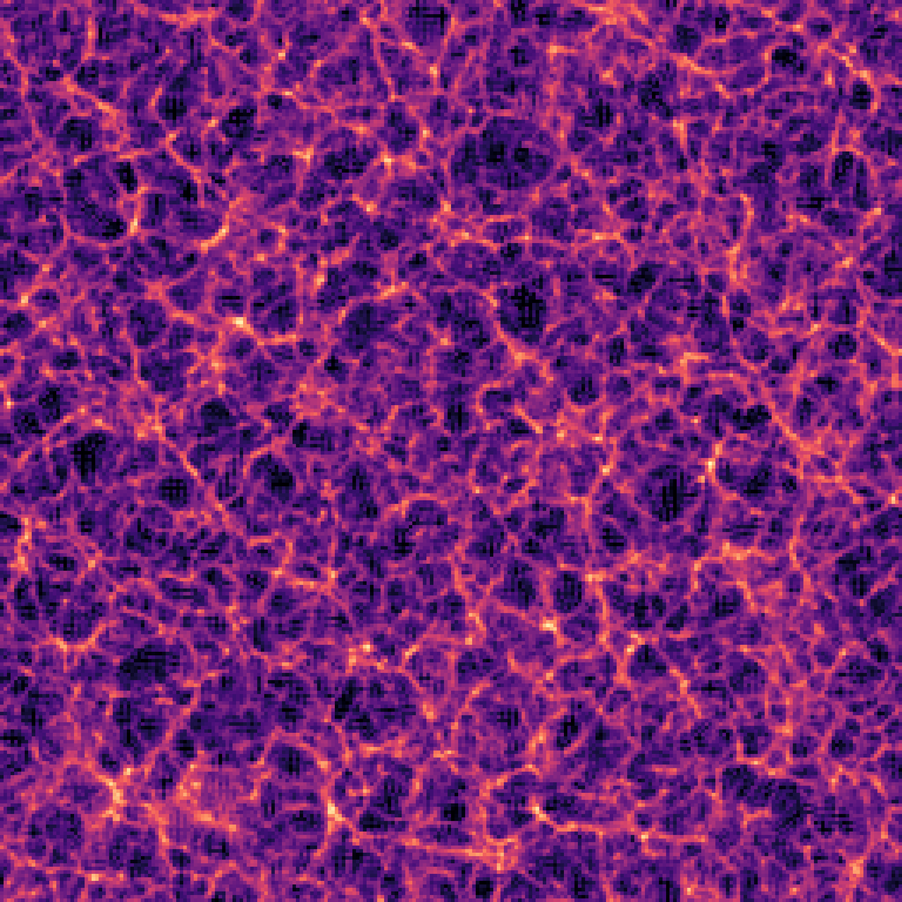

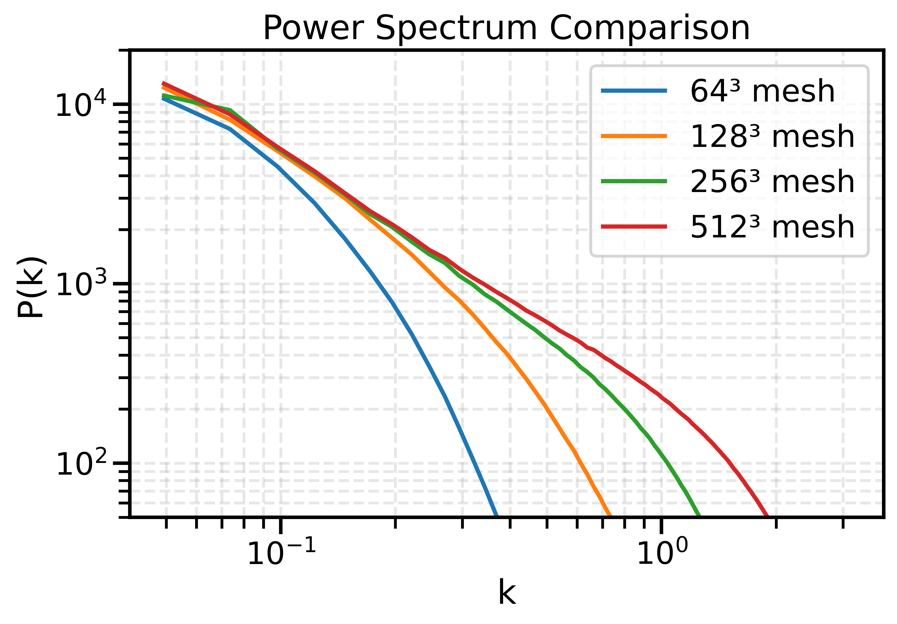
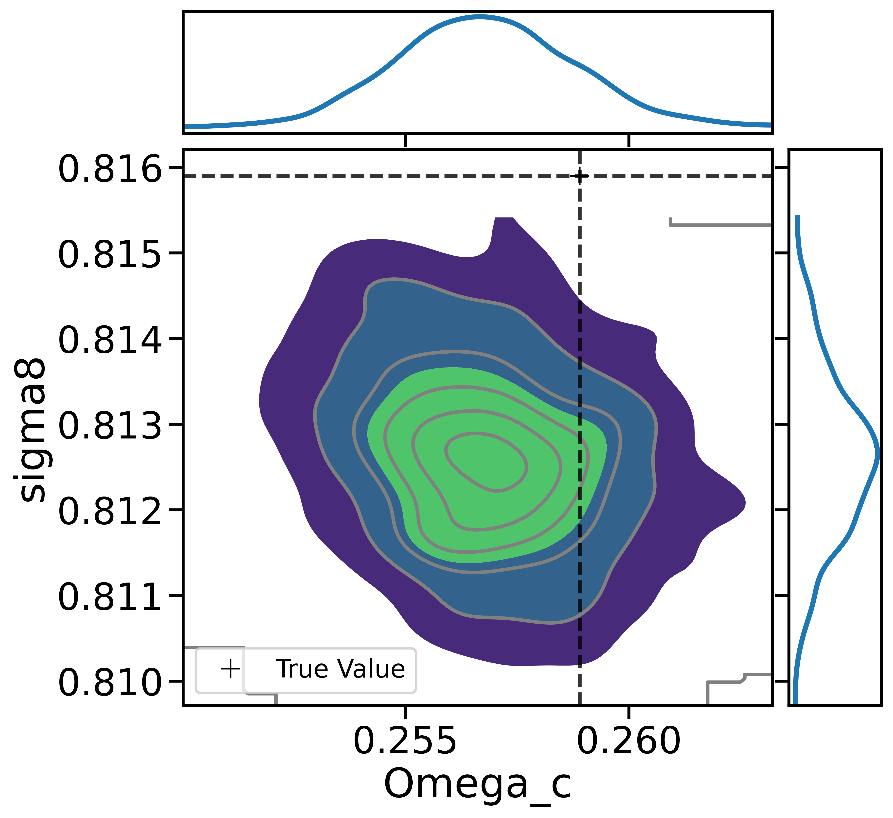
When the Simulator Fails, the Model Fails
Inference is only as good as the simulator it depends on.
- If we want to model complex phenomena like galaxy painting, baryonic feedback, or non-linear structure formation, our simulator must be not only fast, but also physically accurate.
- A decent resolution for weak lensing requires about 1 grid cell per Mpc/h — both for angular resolution and structure fidelity.
Distributed Particle Mesh Simulation


Force Computation is Easy to Parallelize
Poisson’s equation in Fourier space:
\[ \nabla^2 \phi = -4\pi G \rho \]Gravitational force in Fourier space:
\[ \mathbf{f}(\mathbf{k}) = i\mathbf{k}k^{-2}\rho(\mathbf{k}) \]Each Fourier mode \(\mathbf{k}\) can be computed independently using JAX
Perfect for large-scale, parallel GPU execution

Fourier Transform requires global communication
jaxDecomp: Distributed 3D FFT and Halo Exchange

- Distributed 3D FFT using domain decomposition
- Fully differentiable, runs on multi-GPU and multi-node setups
- Designed as a drop-in replacement for
jax.numpy.fft.fftn
- Open source and available on PyPI \(\Rightarrow\)
pip install jaxdecomp - Halo exchange for mass conservation across subdomains
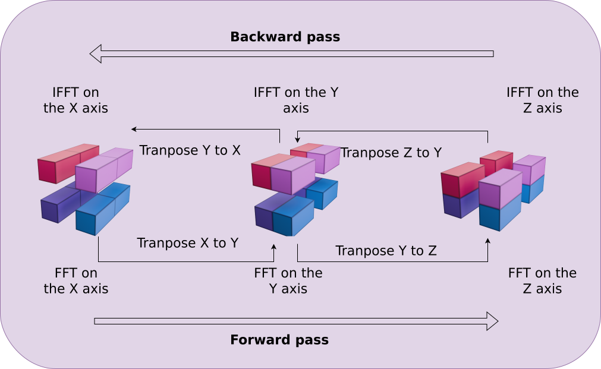
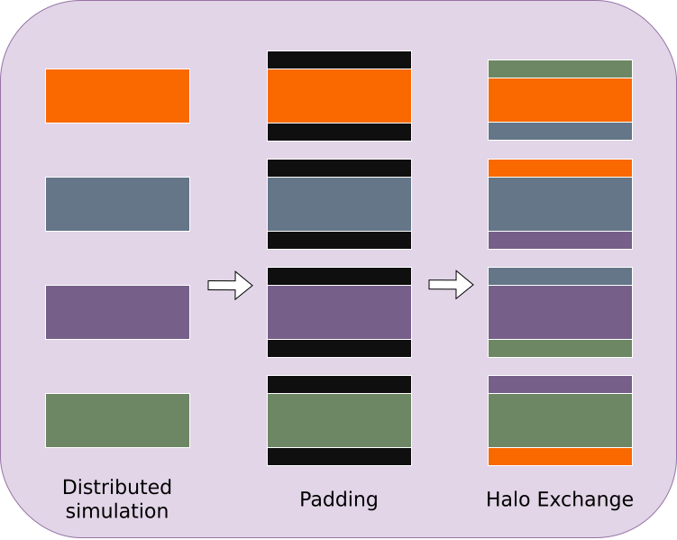
Distributed Particle Mesh Simulation

Distributed Cloud In Cell (CIC) Interpolation
In distributed simulations, each subdomain handles a portion of the global domain
Boundary conditions are crucial to ensure physical continuity across subdomain edges
CIC interpolation assigns and reads mass from nearby grid cells — potentially crossing subdomain boundaries
To avoid discontinuities or mass loss, we apply halo exchange:
- Subdomains share overlapping edge data with neighbors
- Ensures correct mass assignment and gradient flow across boundaries
Without Halo Exchange (Not Distributed)
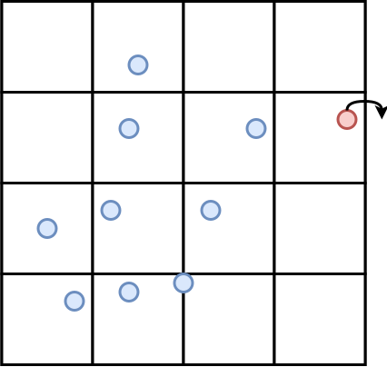
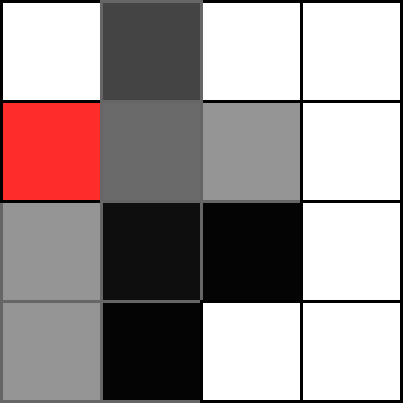
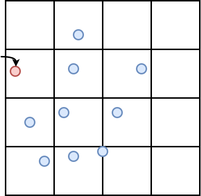
With Halo Exchange (Distributed)

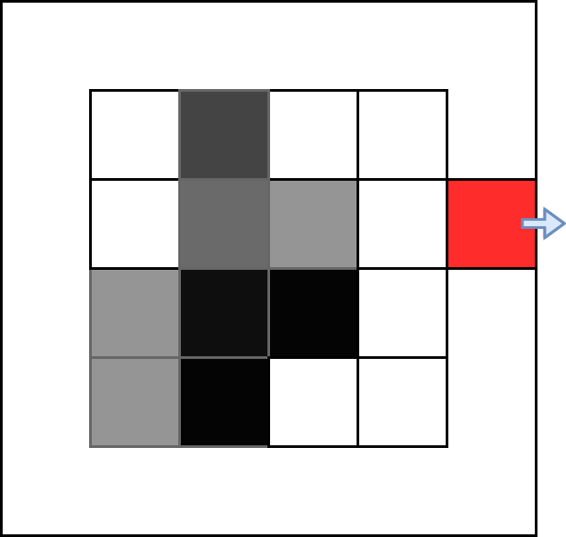
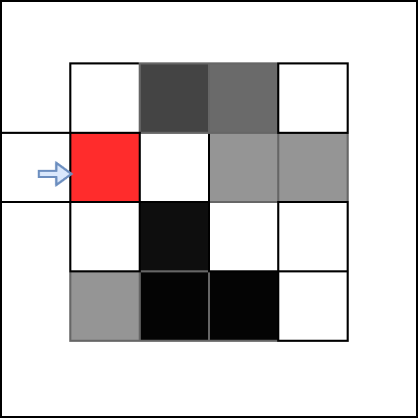
Why Halo Exchange Matters in Distributed Simulations

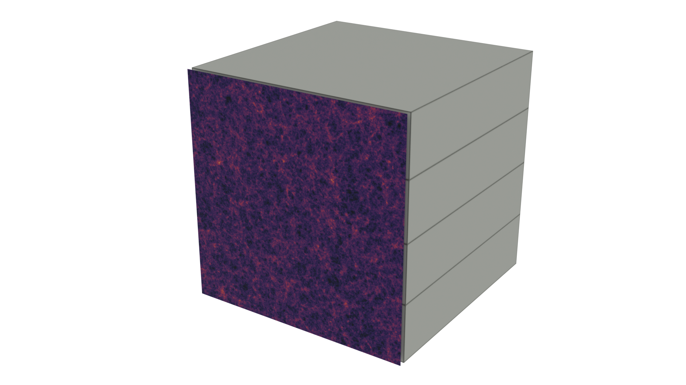
Without halo exchange, subdomain boundaries introduce visible artifacts in the final field.
This breaks the smoothness of the result — even when each local computation is correct.


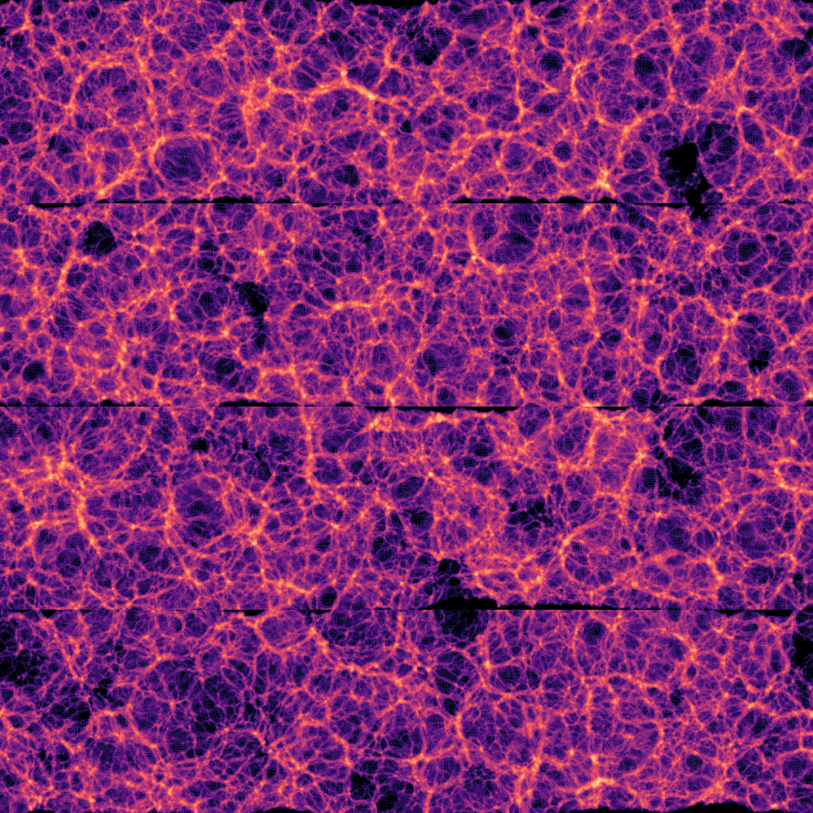

Reverse Adjoint: Gradient Propagation Without Trajectory Storage (Preliminary)
Instead of storing the full trajectory…
We use the reverse adjoint method:
- Save only the final state
- Re-integrate backward in time to compute gradients
Forward Pass (Kick-Drift)
\[ \begin{aligned} d_{i+1} &= d_i + v_i \, \Delta t \\ v_{i+1} &= v_i + F(d_{i+1}) \, \Delta t \end{aligned} \]
Reverse Pass (Adjoint Method)
\[ \begin{aligned} v_i &= v_{i+1} - F(d_{i+1}) \, \Delta t \\ d_i &= d_{i+1} - v_i \, \Delta t \end{aligned} \]
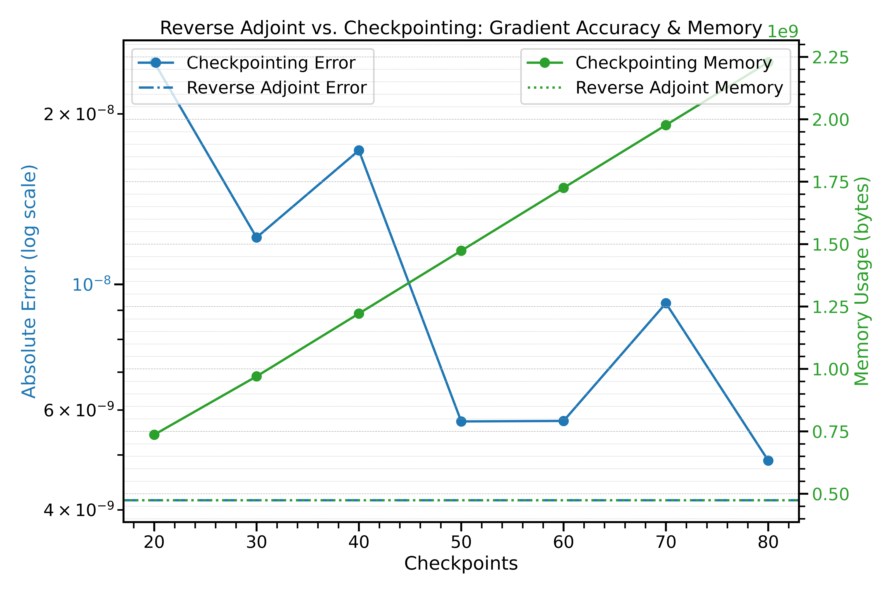
- Checkpointing saves intermediate simulation states periodically to reduce memory — but still grows with the number of steps.
- Reverse Adjoint recomputes on demand, keeping memory constant.
Reverse Adjoint Method
- Constant memory regardless of number of steps
- Requires a second simulation pass for gradient computation
- In a 10-step 1024³ Lightcone simulation, reverse adjoint uses 5× less memory than checkpointing (∼100 GB vs ∼500 GB)
JAXPM v0.1.5: Differentiable, Scalable Simulations

What JAXPM v0.1.5 Supports
Multi-GPU and Multi-Node simulation with distributed domain decomposition (Successfully ran 2048³ on 256 GPUs)
End-to-end differentiability, including force computation and interpolation
Compatible with a custom JAX compatible Reverse Adjoint solver for memory-efficient gradients
Supports full PM Lightcone Weak Lensing
Available on PyPI:
pip install jaxpmBuilt on top of
jaxdecompfor distributed 3D FFT
Preliminary: Spherical Convergence Maps Implementation
Spherical projection of convergence maps is essential for real data inference, bridging simulation outputs with observational cosmology.
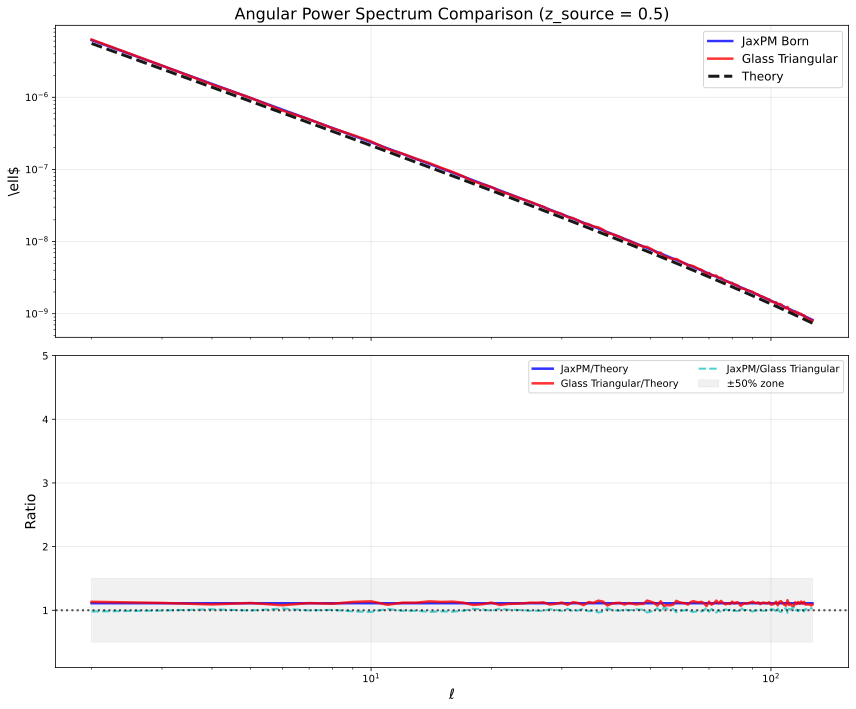

Key Results
- JaxPM Born approximation shows excellent agreement with established Glass triangular window method
- Angular power spectra match theory predictions within expected bounds
- Spherical convergence maps ready for observational data analysis
- Validates our implementation for full-field inference with real survey data